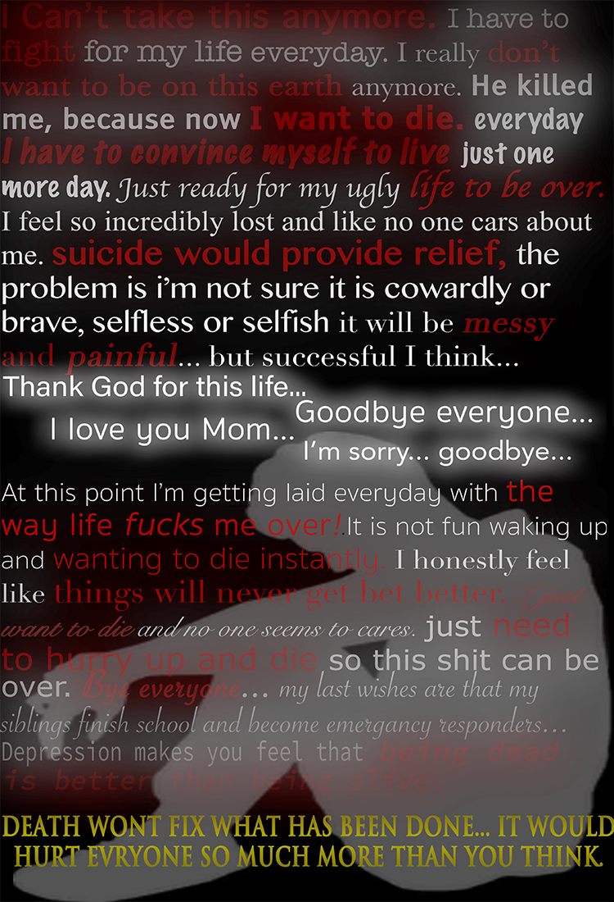
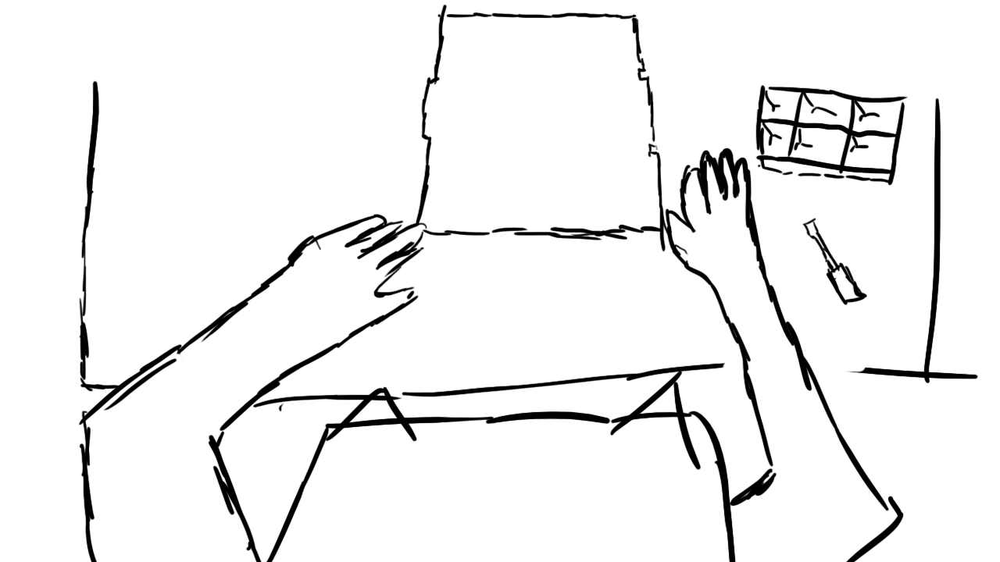
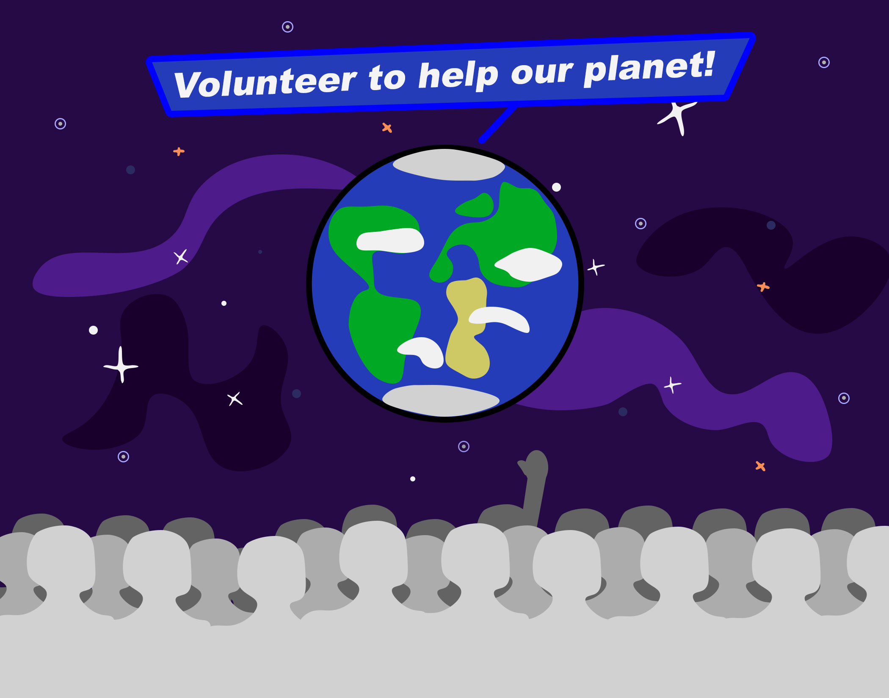
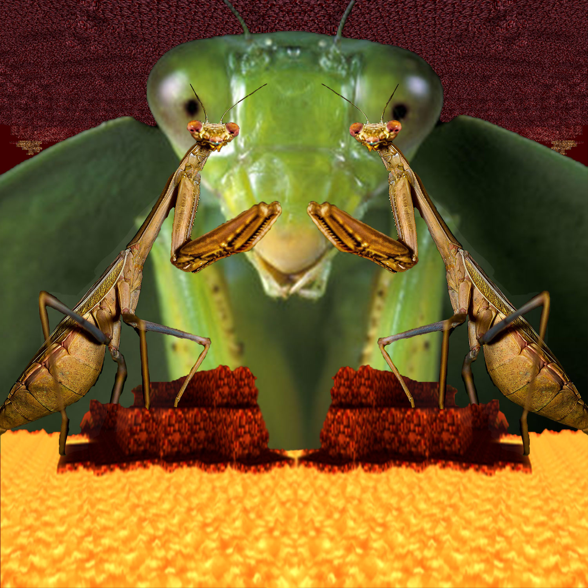
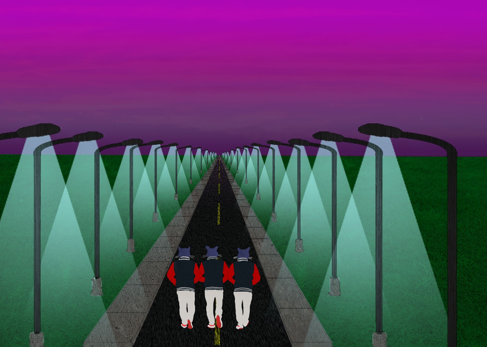

Mitchal graham, in school loser, email - mrgraham306@gmail.com
|
this was for a suicide prevention campgaign, that got really dark
this is my most proud and cherished work, an animation of a character i made but its not done yet...
this was to inspire kids to get involved in the community so i took a basic "kurzgasagt" feeling which is neon flat design
this image was made for a symmetry project i i took a minecraft backround and threw manti on it
this goober was made to show off my vector skills early in the year when no one else was
this image was made to show of making a 1 point perspective image it has the caravan palace "lone digger" cats walking into to the "lone digger" in the distance
this was for an avant garde fashion show, i had many issues making it but it turned out alright when i just started having fun

this image was made for a big head little body competition, and that is me in the image, (say hi) it show i can do body editing

this image was made for a wish you were here design challenge and is most vectors with texture